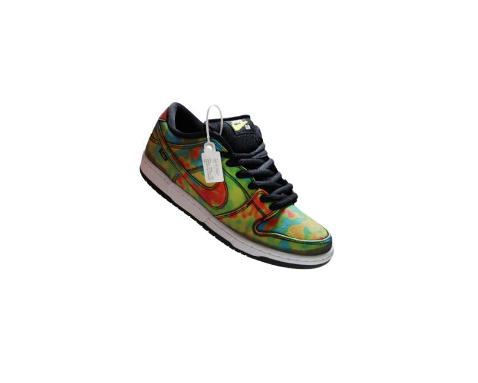
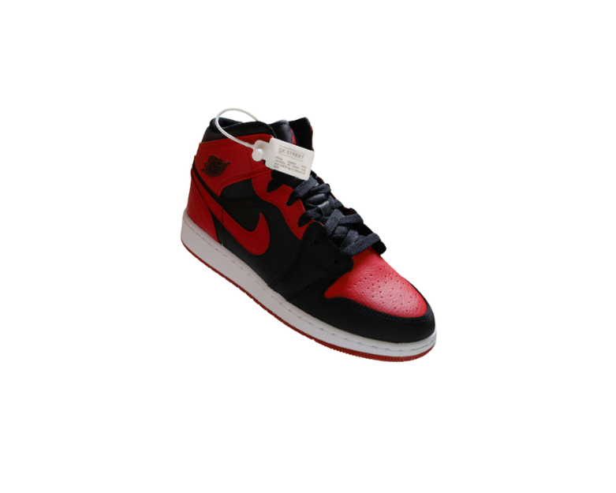

Nike Dunk Low Graffiti
Sneaker de cano baixo com visual vibrante, inspirado em arte urbana e pensado para looks casuais.
R$ 899,90
Ir para o produto
Air Jordan 1 Mid Chicago
Modelo com cano medio, combinacao de vermelho e preto e um estilo classico que permanece em alta.
R$ 1.299,90
Ir para o produtoKYNX Pulse Low
Variacao conceitual com base fria, visual urbano e proposta leve para o dia a dia.
R$ 759,90
Ir para o produtoKYNX Shadow Court
Modelo conceitual de cano medio com visual escuro e proposta inspirada em quadras urbanas.
R$ 819,90
Ir para o produtoKYNX Neon Flux
Versao energetica com cores mais intensas e acabamento voltado para um visual ousado.
R$ 779,90
Ir para o produtoKYNX Royal Street Mid
Silhueta com personalidade forte e acabamento quente para quem gosta de presenca no look.
R$ 849,90
Ir para o produto